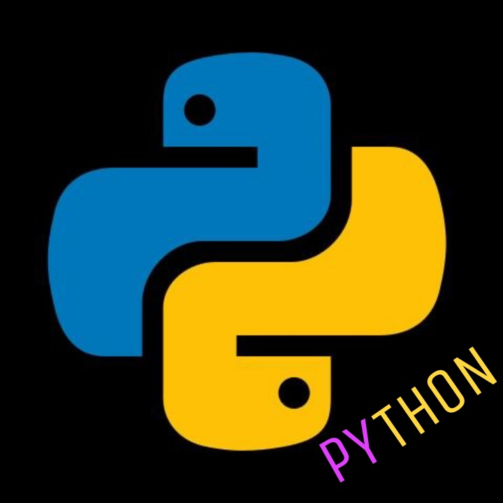

In this BLOG, I'm going to share everything about PYTHON that
I have learnt. Let's get started.
Before jumping to python let's see about programming language.
History of Programming Language and Computers:
When I ask the question who is the Father of Computer?
you guys probably know the answer CHARLES BABBAGE. Why he was
hailed with such a Honor? What had he done? He just created a
machine to a size of the room that calculate mathematical
problems. But the thing to note is he designed it with
much mechanisms. Before ABACUS was the only technique to
calculate mathematical problems fast. Then vaccum tubes...
versions of computers were evolved...
After world war 1 in GERMANY in 1925, under the leadership of
HITLER, scientists created a Machine known as ENIGMA that encodes
and decodes the messsage wih an algorithm. With the help of that
machine, soldiers were able to transfer the messages between
themselves. Even if the messages get into te hand of the enemies, they
will not be able to read it as the messages were encrypted.
And the Algorithm changes everyday. So it was impossible for
the enemies to break the algorith which has millions millions
millions and millions of possibilities. A Mathematician named
ALAN TURING came up with a theory that "HUMANS WILL NOT BE
TO DEFEAT MACHINES, ONLY A MACHINE WILL BE ABLE TO DEFEAT A
MACHINE". So he created a machine and named it as CHRISTPOHER
in remembrance of his friend. This CHRISTOPHER breaks the ENIGMA
algorithm. With the help of CHRISTOPHER they defeated GERMANY.
The break of ENIGMA was only recorded after 50 years. Until
it was kept as a secret. After the death of ALAN TURING, the
CHRISTOPHER was named as TURING'S MACHINE. IMITATION GAME
is a movie with the above concept.
CRYPTOGRAPHY is used in computers. Computer only understands
command as 0's and 1's. That is BINARY CODE.
Humans have different languages to convey with
each other. PROGRAMMING LANGUAGE is a language which
is used to convey with the machines.
PROGRAMMING LANGUAGE is a language wriiten by humans,
which is understandable with little practice. It helps
in the working process of computers. Programming Code
is converted with the help of a compiler or Interpreter
to BINARY CODE which is understandable by the computers.
Examples of Programming languages are c,c++,python,java,
ruby,R,C#,Kotlin...etc...
PROGRAM CODE can be written with certain synataxes
that the programming language have. Certain rules are to
be followed while writing program code or source code. The
syntaxes that is the guidelines of rules differs from
each programming language. But the core concepts are same
for every programming language. So if you have learnt a
programming language, it will be easier for you to learnt
another programming language.
COMPILERS take the whole source code and convert it
to binary code.
INTERPRETERS takes the source code line by line and
convert it to binary code.
That's the major difference between Compilers and
Interpreters
what is python?
PYTHON is a high level programmimg language designed
in february 1991 by GUIDO VAN ROSSUM. It uses Interpreter
to convert the source code to binary.
Why Python?
well, PYTHON is the easiest of all programming languages.
And many many things can be done using python.That is,
it is used in appp development,web development,used my
mathematicians, Data scientists, used to automate machines, used in IOT
(Inernet Of Things)etc...
It is also used in search engine of google,
cryptography of NASA,youtube,firefox and in many other
popular platforms...
How to download PYTHON?
you can download python in python.org- the original
website for python. Choose the suitable version of
your pc. Then install any IDE(Integrated Development
Environment).Like pycharm..etc.You can also code using
notepad and save the file with extension.py..
[eg: file name.py].
You can also use online compilers... and to
practice python in android, you can use pydroid3.
Python files should have extension as 'py'.
Extensions are nothing but it denotes what kind of file.
In the above example 'file name' is the name of the file
and after the dot(.), it is extension. And it denotes
the kind of file.
why IDE?
You can code in python shell(nothing but python
window on your screen with '<<<'). But you can't save.
so IDE's are used to save your projects.
You got covered the basic things.....
NOW, you can learn to CODE....

HAPPY PYTHONING...